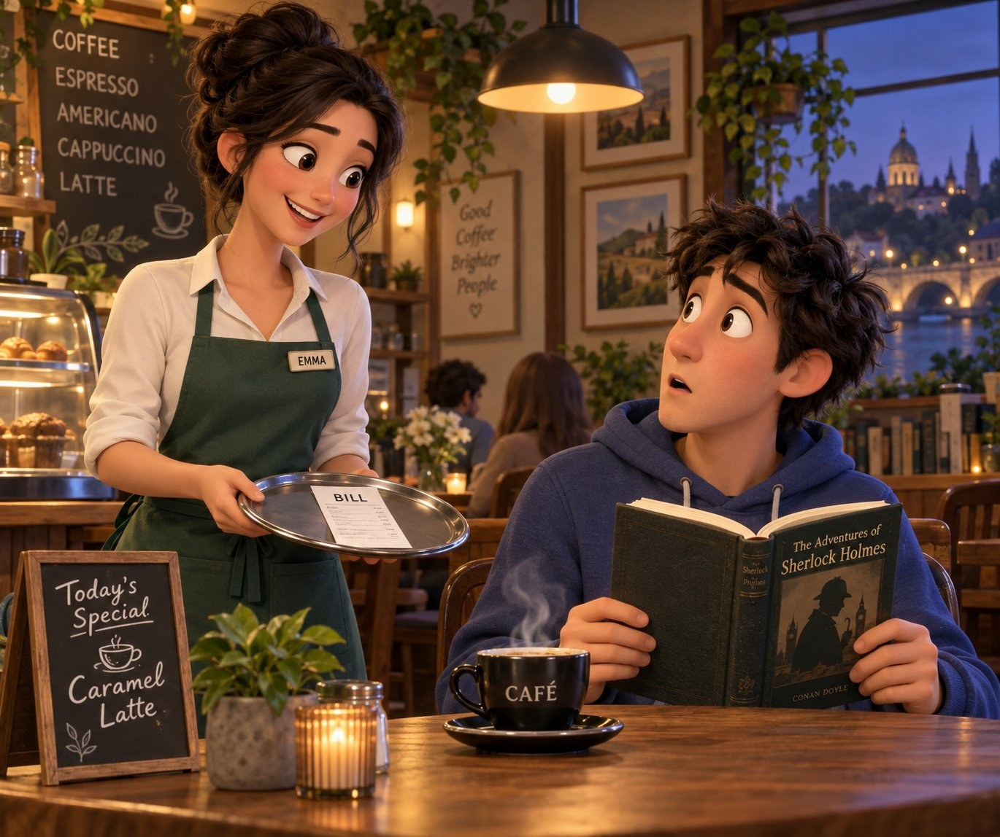
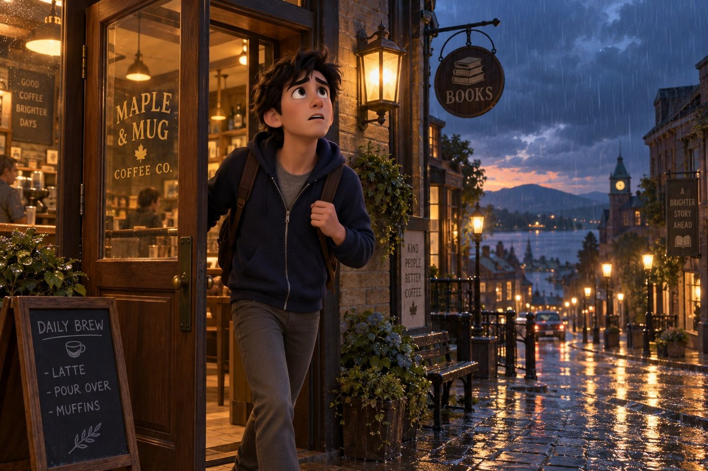

English lesson · Past continuous · when / while
Для учителя: The Maple & Mug Alibi
Эта страница не связана с уроком для ученика. Домашки в оригинале не было — я её не добавляла. Аудио в оригинале тоже не было, отдельную озвучку не ставила.




В оригинале уровень выбирал учитель («Waiting for the teacher», блок «Teacher tools» с ключом алиби стоял прямо на странице ученика). Теперь ученик может открыть любой из четырёх уровней сразу, а ключ живёт только здесь.
Правило
- while — более длинное действие, фон или два действия одновременно: while + was/were + -ing.
- when — короткое действие, точный момент или одно действие за другим: when + past simple.
Ключи · Level 1 · Pick the Word (8)
- When I arrived at Maple & Mug café, it was 14:40.
- While I was sitting at the table, I was drinking coffee.
- I was reading a book while I was drinking coffee.
- When the waitress Emma brought the bill, I paid.
- When I left the café, it started raining.
- It started raining when I left the café.
- While I was walking home in the rain, I called my friend.
- When I arrived home, it was 15:25.
Ключи · Level 2 · Catch the Mistake (7)
- While I arrived… → When I arrived at Maple & Mug café, it was 14:40.
- When I was sitting… → While I was sitting at the table, I was drinking coffee.
- I was reading a book when I was drinking coffee. → I was reading a book while I was drinking coffee.
- While the waitress Emma brought the bill… → When the waitress Emma brought the bill, I paid.
- While I left the café… → When I left the café, it started raining.
- When I was walking home… → While I was walking home in the rain, I called my friend.
- While I arrived home… → When I arrived home, it was 15:25.
Ученик пишет предложение целиком. Короткие ответы вроде одного слова when/while Алексо просит сказать всё предложение.
Ключи · Timeline (Level 3–4)
Чтобы закрыть дело на 4 уровне, нужно собрать все шесть фактов правильными предложениями с when/while:
- 14:40 When I arrived at Maple & Mug café, it was 14:40.
- While I was sitting at the table, I was drinking coffee and reading a book.
- When the waitress Emma brought the bill, I paid.
- When I left the café, it started raining.
- While I was walking home in the rain, I called my friend.
- 15:25 When I arrived home, it was 15:25.
На 3 уровне вопросы с when/while открывают факты как «услышанные». На 4 уровне их нужно ещё раз сказать своими предложениями, чтобы подтвердить. Подписи на таймлайне и фото улик остаются скрытыми, пока факт не прозвучал.
Типичные ошибки (из оригинала)
- While Emma brought the bill, I paid. → When Emma brought the bill, I paid.
- When I was walking home, I called my friend. → While I was walking home, I called my friend.
- While did you arrive? → When did you arrive?
- What you were doing when it started raining? → What were you doing when it started raining?
Ключи сверены с правилом урока, противоречий в оригинале не нашла.
Что исправлено относительно Arena
- Один ключ
tutorcall-maple-mug-alibi-v1, сохранение при каждом изменении, «↺ Начать заново» с русским подтверждением. - Уровни больше не ждут учителя: все четыре доступны сразу.
- Ключ алиби убран со страницы ученика на эту страницу.
- Картинка сцены видна над допросом, когда к заданию есть фото.
- Прогресс (чат, уровень, улики, подсказки) сохраняется в браузере.